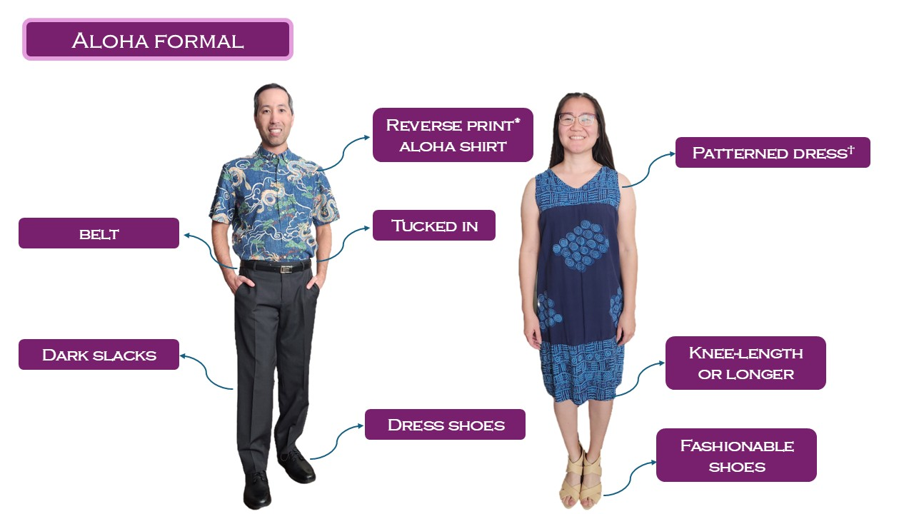
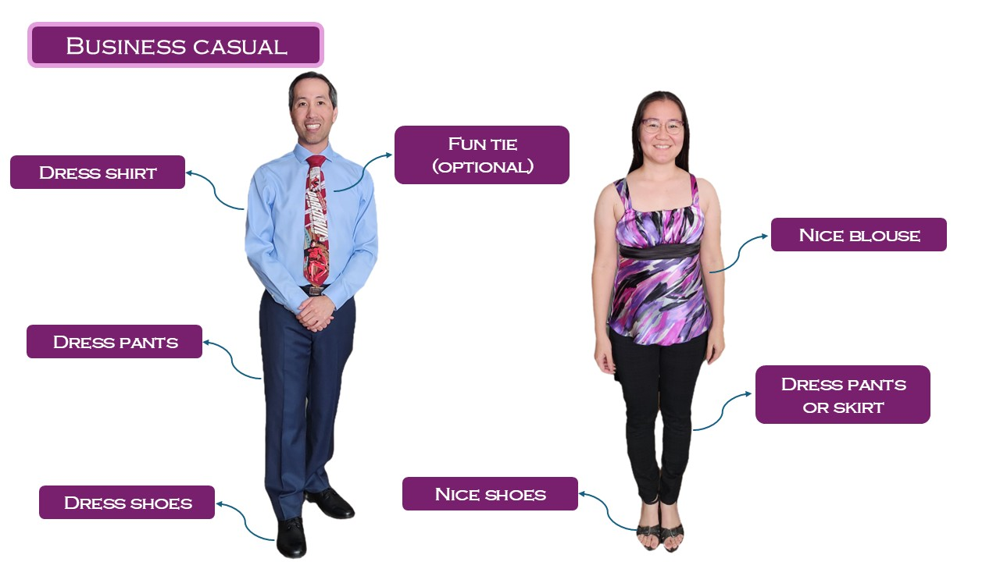

The following are examples of appropriate attire for the Hawaii event.


* Reverse print means that the shirt is sewn so that the print is on the inside, giving the garment a more muted look.
† This would ideally be an aloha print, but Sheri doesn't own any. However, the pattern on this dress is close enough.
We expect most people to wear clothes they already own. However, if you're looking to buy quality aloha attire, our favorite store is Reyn Spooner.
You will look out of place if you show up in the following outfits.